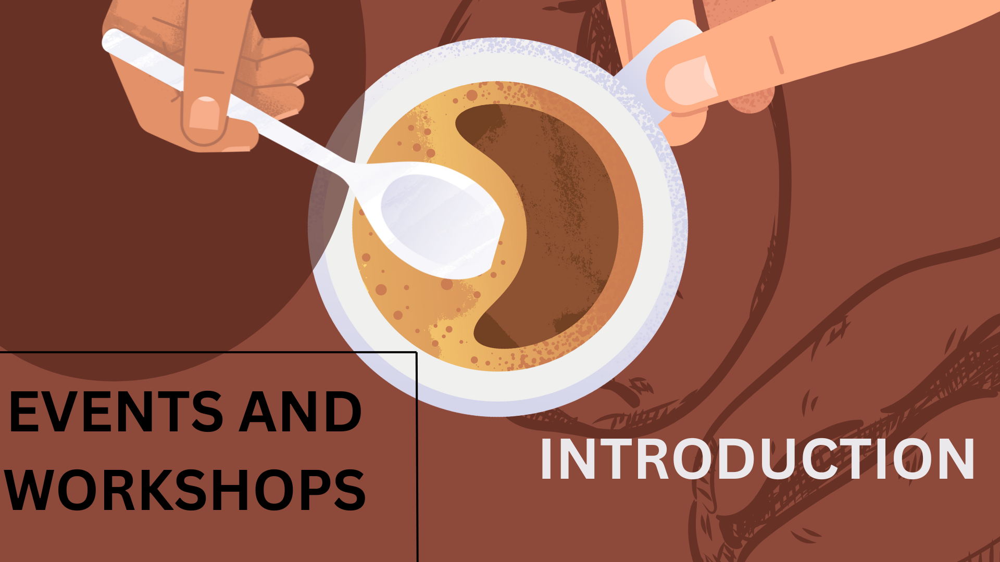

Coffee Selection
Brewing Equipment
Events and Workshops
Special Offers and Subscriptions

![Open Mic Night
Express Your Originality
Come See Live Performances with Us!
If you have a gift for storytelling, poetry, music, or comedy, our Open Mic Nights are the ideal way to showcase it to a welcoming and encouraging audience. Savor a variety of performances, excellent coffee, and the opportunity to network with other local creatives during this evening.
What's covered:
Stand-up comedy, storytelling workshops, live music, and poetry readings.
An opportunity for YOU to perform and show off your skills.
A friendly setting that accommodates all ability levels.
Coffee, pastries, and a comfortable setting for watching the performance.
18th of February, 2025
Bean boutique coffee shop on Tunapuna Road main street
Cost: Free admission | Performers register in advance](../Pics/events/mic-night.png)
![Events and Workshops
Coffee-Inspired Recipes Workshop
Get Creative in the Kitchen with Coffee!
Are you a coffee aficionado? Then you'll love our Coffee-Inspired Recipes Workshop! Come for a fun, hands-on class where you'll discover how to transform your favorite coffee into delicious desserts. From traditional tiramisu to rich espresso brownies, we'll teach you how to add coffee flavor to every bite.
What's Included:
Discover how to prepare well-known coffee-flavored desserts such as Tiramisu, Coffee Cake, and Espresso Brownies.
Step-by-step instruction from our skilled trainers.
Professional tips on pairing coffee with ideal dessert ingredients.
Take home the recipes to try at home!
When: February 12th, 2025, at 12 pm
Where: At the Bean Boutique Coffee Shop on Tunapuna Main Road.
Cost: $30.00 per head (all ingredients and hands-on experience included).
Places are limited.
Book now and bring your passion for coffee into the kitchen.](../Pics/events/recipes.png)
![The Chronicles of Beans Aromas and Beyond
Sip & Savor: A Journey Through Coffee
Join Us for an Exclusive Coffee Tasting Experience!
Explore the rich, complex world of coffee in our Sip & Savor event. Whether you're a coffee enthusiast or a casual drinker, this guided tasting session will take you on a flavorful journey through a curated selection of coffees from around the globe. From fruity, bright light roasts to bold, smoky dark roasts, you’ll discover the unique flavor profiles that make each cup special.
What’s Included:
Sample a variety of premium coffees from different regions.
Experience professional cupping and brewing techniques.
Learn how origin, roast, and brewing methods impact flavor.
Expert tips from our baristas and roasters.
Event Details:
When: March 25th at 8:30 PM
Where: At the Bean Boutique Coffee Shop on Tunapuna Main Road
Price: $15 per person (includes all coffee samples and pairings)
Limited spots available!
Reserve your seat today and get ready to sip, savor, and learn.](../Pics/events/sip-savor.png)